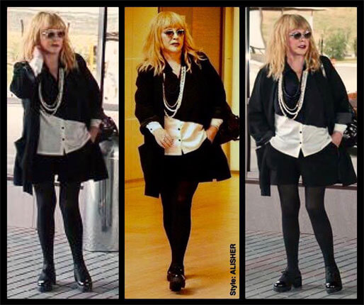

Алла Борисовна дымила больше 50 лет, из-за сигарет получила свой знаменитый голос с хрипотцой. Пугачева отказалась от курения в 2013 году, когда родились двойняшки. В светской тусовке поползли слухи, что примадонна изменила свою привычку именно из-за них.
Но только сейчас Алла Борисовна проболталась о том, что помогло ей отказаться от курения.
— Батюшка заставил поцеловать крест и сказал, мол, бросай курить. Конечно, это было непросто. Я переживаю за ситуацию в мире. Бросила курить и все обострилось, по ночам не сплю, есть начала, поправляться. Тяжеловато, конечно, когда ты 52 года дымил, а сейчас во рту так скучно… Хорошо друзья посоветовали один способ, через пару дней тяга к сигаретам прошла, а вес остался прежний.
По признаниям самой певицы, она постоянно занимается детьми, поет им песни и не хочет, чтобы от нее пахло сигаретами. А еще Алла Борисовна похорошела — сбросила лишние килограммы и даже поменяла стиль одежды
А вот другая светская дама недавно призналась, что они с мужем не могут завести детей. “Мы вот тоже уже год пробуем, но все безрезультатно” — неожиданно отреагировала Ксения Собчак в интервью с Анной Нетребко.
Несколько лет назад Ксения Собчак была активной курильщицей и дымила даже на светских вечеринках.
Известно, что теледива бросила курить в 2013 году, сразу же после свадьбы с Максимом Виторганом. Видимо, уже тогда звездная пара пыталась зачать наследника.
Одна из подруг, пожелавшая остаться неизвестной, рассказала о том, как бросила курить Собчак.
— Сначала Ксюша очень страдала, начала заедать тягу к сигаретам сладким и мучным. Поправилась, появился целлюлит. Сами понимаете, для публичного человека это недопустимо. Но потом я подарила ей одно средство, оно распространено в нашей тусовке. От него не хочется курить вообще! К тому же, не поправляешься и не психуешь. Сейчас Ксюша не курит уже полтора года и я рада, что смогла помочь ей.
Мы выяснили, какой способ борьбы с курением распространяется в звездной тусовке. Оказывается, это разработка российских ученых —двухфазное средство “Фритаб”. Пластины снижают тягу к сигаретам, регулируют аппетит и снимают нервное напряжение. Звезды российского шоу-бизнеса передают из рук в руки контакты магазина, где можно купить настоящий Фритаб.
Официальный сайт магазина “Фритаб”Коментарии
Любовь (г. Санкт-Петербург) Не считаю ее особенно умной и способной, но материнский инстинкт - это святое, думаю, что, если это не пиар-ход про беременность, то ей просто надо сбавить темп и снизить градус негатива, тогда и ребенок получится. :) Я вот не люблю Собчак, но желаю ей родить здорового малыша (или не одного), ведь именно дети меняют нас к лучшему, может, подобреет и научится просто быть счастливой, а не скандальной.
Татьяна (г. Анапа) Я со школы поклонница Аллы Борисовны Пугачевой. Мне всегда нравились её песни и их исполнение. Она молодец, что бросила курить, надо было раньше. Я что-то слышала об этом средстве. Кажется, мой зять бросал курить с Фритаб. Кстати, не курит уже 2 года!
Анна Литвинова (г. Москва) Прикольно, я сама бросила курить с Фритаб. Не знала, что он так распространен среди звезд. Странно, потому что цена у этого средства очень даже бюджетная. Совсем не лакшери. Все-таки даже звезды между понтами и здоровьем выбирают второе))
Галина (г. Тюмень) Собчачка совсем недавно на весь мир орала как она не любит детей. А теперь не может забеременеть? Ну хотя бы курить бросила и то молодец.
Сергей Курагин (г. Хабаровск) Эх, а я ведь помню Аллу Борисовну совсем молодой, с голосом, как у соловья. А потом сигареты забрали у нее прелестный голос, остался хрип какой-то. Хорошо что бросила курить сейчас! Мне тоже наверное надо. Заказал Фритаб, так мне гель вообще в подарок дали! Я обалдел.
Лилия Толмачева (г. Москва) Люди, не надо быть злыми и завистливыми. Все и каждый живет как может. Всем здоровья и счастья! Молодцы Максим и Алла, согласитесь, не каждый так сможет.
Светлана (г. Казань) Ой, девочки, я как-то бросала курить… Меня разнесло ужасно, пришлось всю одежду менять и покупать на 3 размера больше. Вроде ничего такого не ела, соблюдала диету, а вес все равно рос. Начала курить и вроде сбросила все. Но мне курить надоело, у меня уже все зубы желтые и желудок болит. Что делать? Помогите!!
Марина Литвинова (г. Ульяновск) Света, не паникуй. У меня такая же история была. Я пол года назад закончила курс Фритаб. НЕ НАБРАЛА НИ ГРАММА!!! Хотя в первый раз тоже разнесло не по-детски. Ты главное делай все, что написано в инструкции. Я вот легко бросила и курить вообще не тянет, даже когда выпью или понервничаю. Заметила, что прошли прыщики и зубы из грязно-желтых превратились в белые.
Ольга (г. Ростов-на-Дону) Я поддерживаю, надо бросать курить и чем скорее, тем лучше. Мой муж, как и Пугачева прокурил 52 года, а потом заболел, Болезнь вызвали сигареты. Финал - через 3 года умер. Поэтому, люди бросайте курить!!
Nadejzda (г. Пенза) Каждая женщина мечтает стать матерью, что бы она не говорила при этом. И не важно богатая она или нет. Желаю вам Ксюшенька обязательно испытать это чувство!
Олег Брагин (г. Екатеринбург) Я заказывал в этом же магазине! Я чем только не пользовался — жвачки жевал, пластыри клеил, ничего не помогало. Сейчас прохожу курс Фритаба и курить не тянет вообще!!